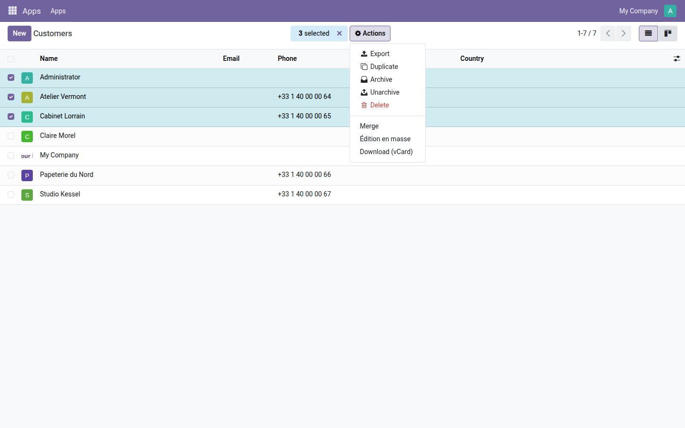
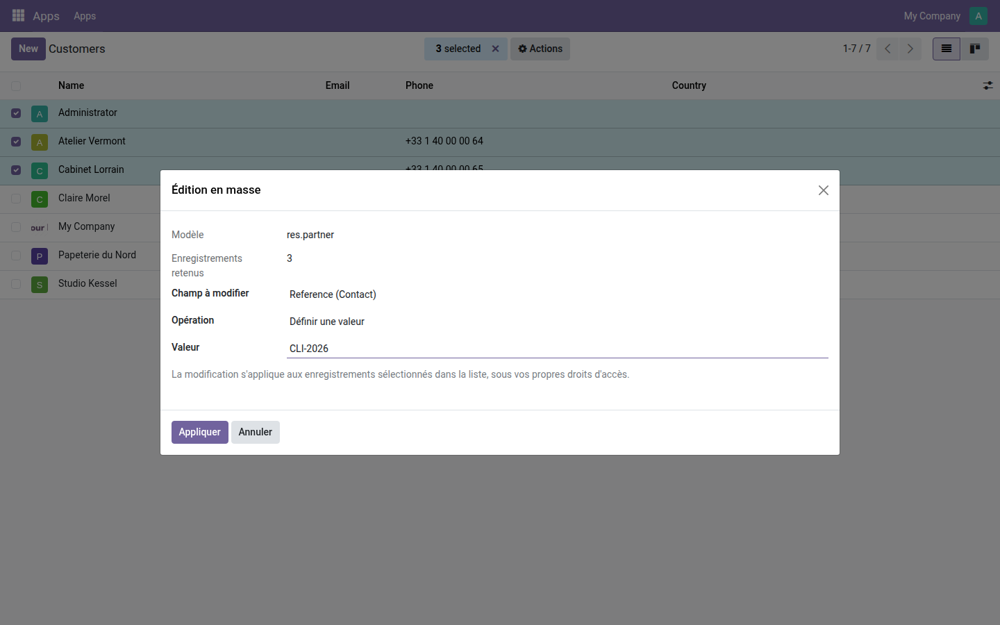
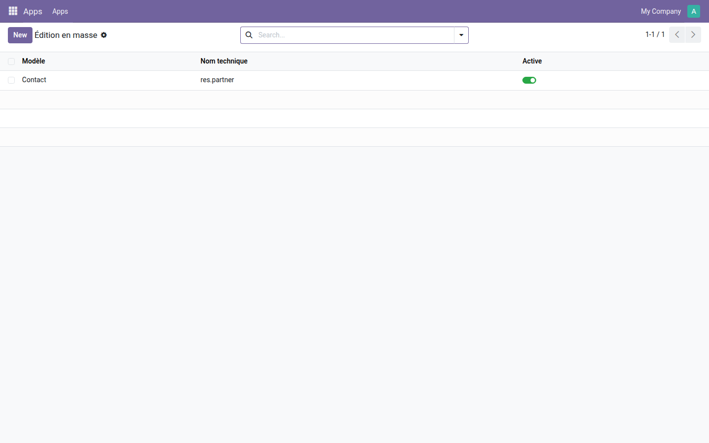

Change a field on an entire selection from the list view, without opening each record.
Fixing the same mistake on two hundred contacts, setting a salesperson on a whole batch of orders, clearing a field that has become obsolete: Odoo asks you to open each record, one by one. The only native alternative is to export, edit in a spreadsheet, then re-import — three chances to get it wrong for a one-second fix.
sudo().Three contacts ticked: "Mass Edit" takes its place among Odoo's native actions (Export, Duplicate, Archive, Delete), without moving anything.

The model and the number of selected records are shown plainly; the field is chosen from the model's writable fields, here "Reference" on three contacts.

An administrator adds or removes a model in one line. Deactivating it removes the entry from the Actions menu without losing the configuration.

If your need is less about data entry than about controlling what each person can see and change, the OdooSkills range includes some fifteen access-partitioning modules — by sales team, by department, by project, by accounting journal, by warehouse. Full catalog: apps.odooskills.com.
License LGPL-3 — compatible with Odoo 19.0 Community and Enterprise. Support: apps@odooskills.com.